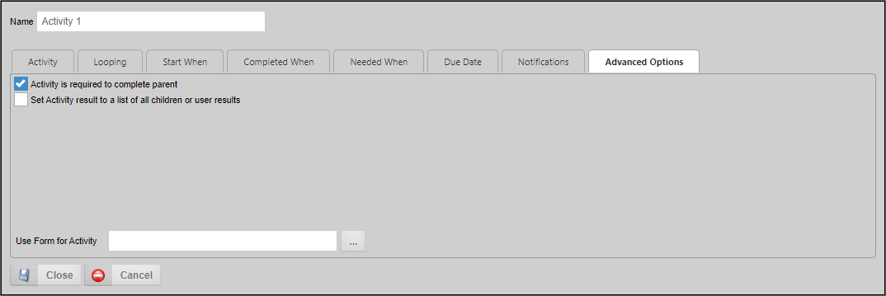

You should not use any other type of activity as a Parent Activity.
You should not use any other type of activity as a Parent Activity.Parent activities are parent containers for other activities, which are referred to as “Children” or "child activities".
You should not use any other type of activity as a Parent Activity.
In Process Director versions 3.45 and higher, additional functionality is available to Parent activity types: Results Concatenation and Looping.
In addition to the common properties tabs that appear for all Timeline activities, the configuration settings below are unique to this activity type.
By default, the result of a parent activity is set to the result of the child task whose completion resulted in the completion of the parent (this behavior is implemented in Process Director v3.45 and up. In previous versions, the parent never has a result.). Parent activities have the option of setting the result of the Parent activity to a comma-separated list of all the child results. This list will contain only the results from the immediate child activities of the Parent activity; it will not use results from any Parent activities that have been created under the top-level Parent. If the parent is configured to loop, only the results from the final iteration will be included. If the parent contains other parent activities, only the results from the direct children of that parent will be included; the results from the children of "subparents" will not be included.
Parent activities can also be used to create loops within your Process Timeline. When configured this way, the children are referred to as a “looping segment”, i.e., a segment of your Process Timeline that iterates, or loops. A looping segment will continuously loop through the child activities until a user-defined condition, or set of conditions, is satisfied.

Selecting the Parent activity type will display a Looping tab in the designer, from which the iteration conditions can be specified.

A parent activity that implements iteration will also display a unique icon in the Process Timeline definition.

The Looping tab contains three methods for controlling iteration through the child activities, each of which controls some aspect of how the looping segment will work by determining the conditions under which the following actions will occur:
Here’s how these three methods work.
Each time Process Director prepares to execute the looping segment, this condition will be evaluated to determine whether or not to do so. If the condition is not met, the looping segment will start again. If the condition is met, however, the loop will not be repeated, and the parent activity will be marked as complete. Any successive activities in the Process Timeline will now be eligible to run.
The remaining methods of controlling the loop rely on conditions that are evaluated each time any child activity completes. When the relevant condition is met, execution of the loop will be interrupted.
When the specified condition is met, the current loop will be immediately stopped, and the loop will restart with the first child activity.
When the condition specified by the user is met, the current loop will be immediately stopped, and the parent activity will be marked as complete. Any successive activities in the Timeline will now be eligible to run.
It is quite possible that you will need to configure all three methods. As an example, let's consider a simple approval process for a request. Suppose that each level of approval can end in one of three results: Approve, Reject, and Terminate. In this case, we might want to configure the segment as follows:
The first method for controlling the loop relies on a condition that is evaluated when your Process Timeline first runs the parent activity, and then again each time the looping segment completes (that is, each time all of the activities in the loop have completed).
This property gives you the ability to provide an administrative comment that will show up in the Routing Slip for the Timeline if the loop is canceled or restarted and cancels users in parallel activities.

Selecting this option concatenates the results of all child activities to a comma-separated list of results, which become the result for the Parent activity.
The looping functionality is normally predicated on the results of the Child Activities. Specific System Variables have been implemented to make accessing the results of the Child Activities easier.

The Iteration SysVars are available from the Timeline Activity branch of the Condition Builder's System Variables menu, and consist of:
Follow the links above to see a detailed explanation of each System Variable.